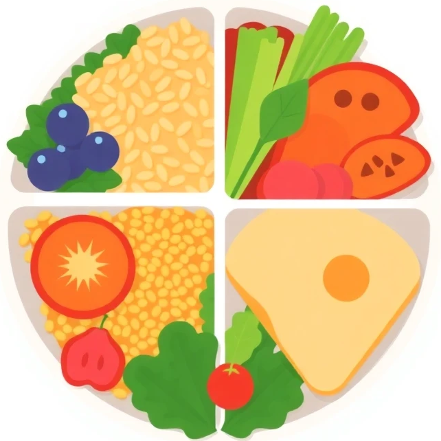
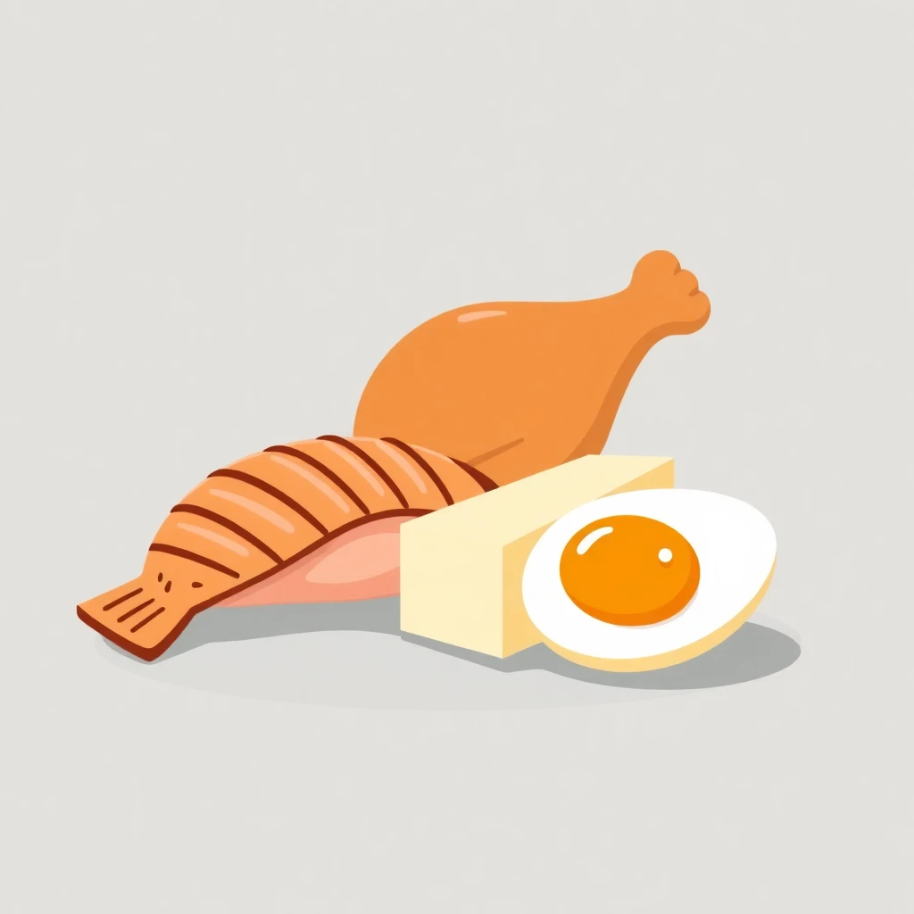
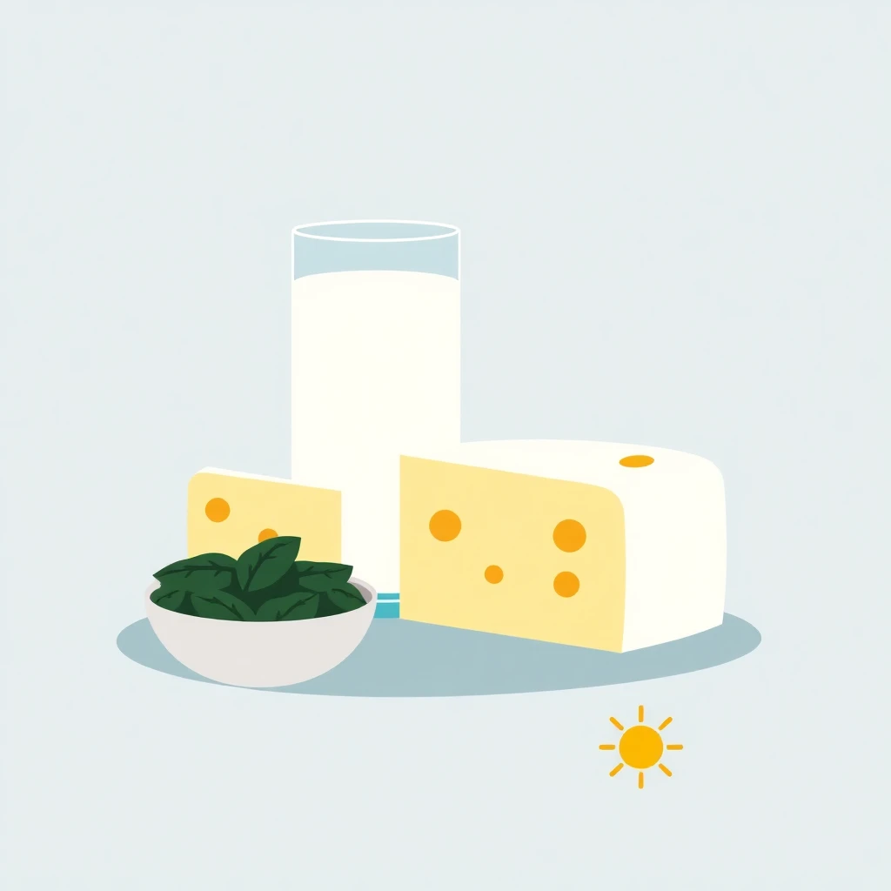
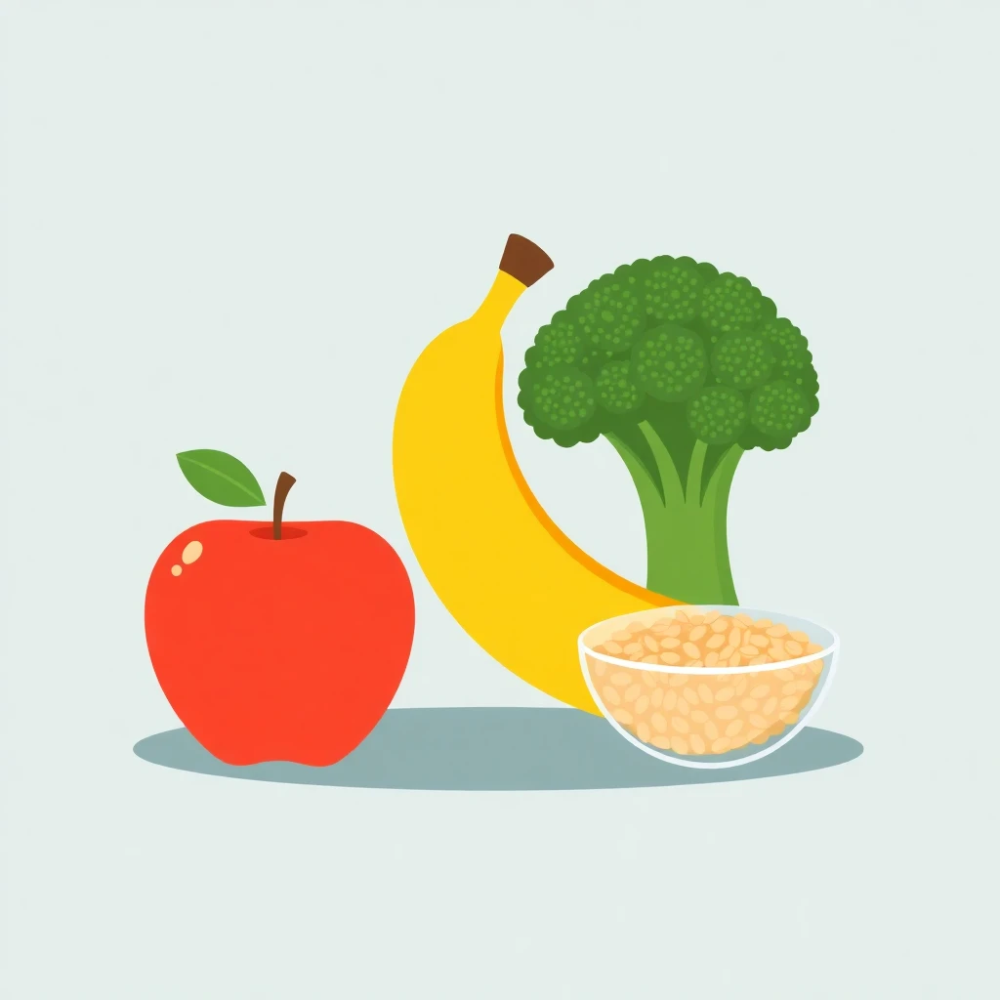
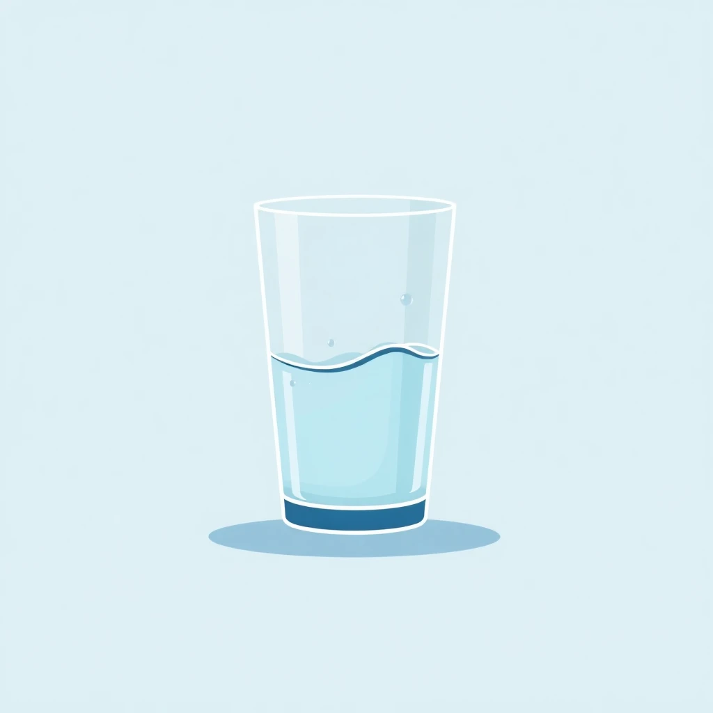
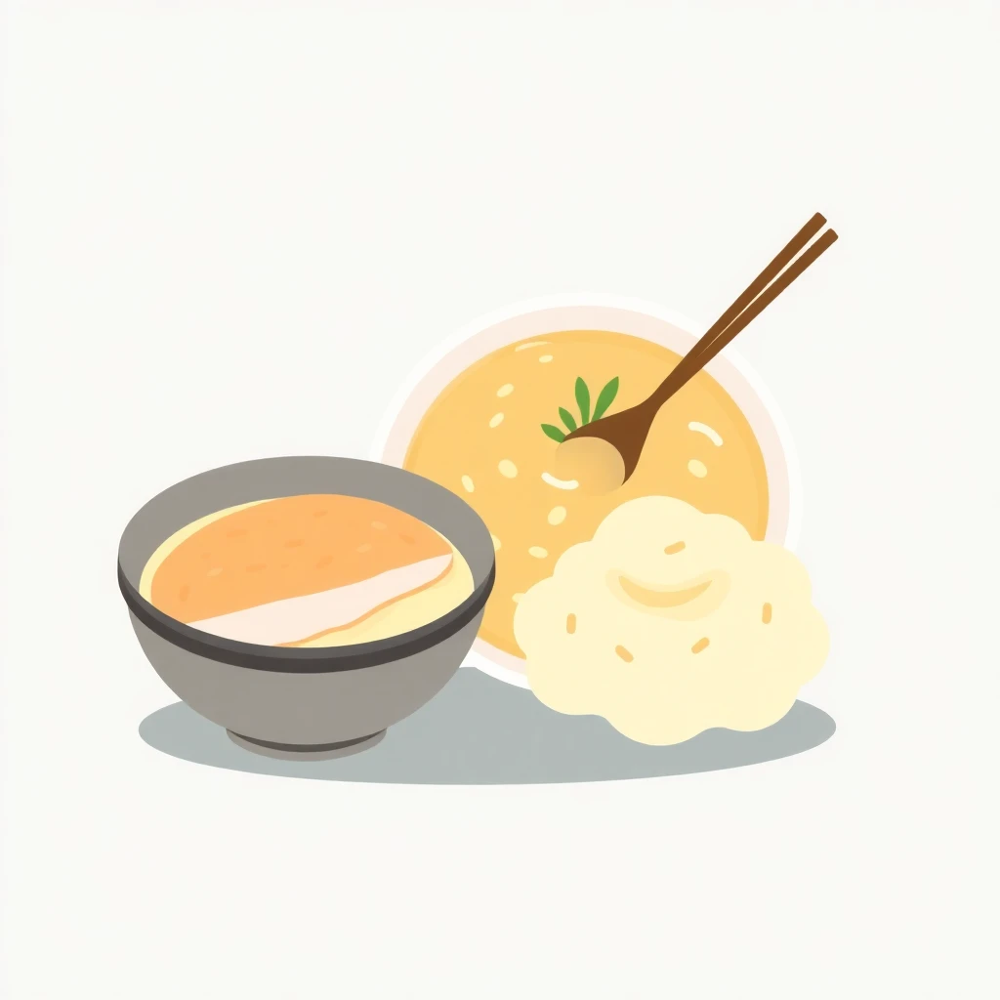

建議飲食
隨著年齡增長，身體機能會有所轉變，對營養的需求亦與以往不同。均衡且適當的飲食對於維持長者健康、活力及預防疾病至關重要。本網頁旨在提供實用的飲食建議及注意事項，助長者吃得健康，活得精彩。
飲食建議

1. 均衡飲食，種類多元
每日應攝取六大類食物，包括全穀雜糧類、豆魚蛋肉類、乳品類、蔬菜類、水果類及油脂與堅果種子類。盡量選擇不同顏色的蔬果，以攝取多樣化的維生素、礦物質和植化素。
飲食點子：
糙米飯搭配清蒸魚及多色炒時蔬；雜糧饅頭佐豆漿與水煮蛋。

2. 足夠蛋白質，維持肌力
長者容易有肌肉流失的問題，應攝取足夠的優質蛋白質，如魚肉、雞肉、雞蛋、豆製品、乳製品等，有助於維持肌肉量與肌力。
飲食點子：
毛豆炒雞丁、鮮蝦豆腐煲、原味乳酪拌水果。

3. 補充鈣質，強健骨骼
多攝取富含鈣質的食物，如牛奶、乳酪、板豆腐、深綠色蔬菜、小魚乾等。同時適度日曬，有助於身體合成維生素D，促進鈣質吸收，預防骨質疏鬆。
飲食點子：
芥蘭炒小魚乾、起司焗烤蔬菜、芝麻糊。

4. 高纖飲食，促進腸道健康
多吃蔬菜、水果、全穀類等富含膳食纖維的食物，有助於促進腸道蠕動，預防便秘，並可穩定血糖。
飲食點子：
燕麥粥佐各式水果、地瓜葉拌橄欖油、綜合堅果一份。

5. 充足水分，維持機能
長者對口渴的敏感度可能降低，應定時定量飲水，每日建議飲用6-8杯水（約1500-2000毫升），以維持身體正常代謝機能。
飲食點子：
除了白開水，也可適量飲用無糖茶飲、清湯或自製檸檬水。

6. 選擇軟質，易於咀嚼
若有牙口不佳或吞嚥困難的情況，可選擇質地較軟、易於咀嚼和吞嚥的食物，如蒸蛋、魚肉、豆腐、瓜類蔬菜等，或將食物切小塊、煮爛。
飲食點子：
冬瓜燉肉燥、馬鈴薯泥、香蕉奶昔。
注意事項
- 少油、少鹽、少糖：避免攝取過多飽和脂肪、反式脂肪、高鈉及精緻糖食物，以降低心血管疾病、高血壓、糖尿病等慢性病風險。
- 避免刺激性食物：如辛辣、油炸、咖啡因過量等，以免造成腸胃不適。
- 注意食物安全與衛生：食材要新鮮，烹調過程應注意清潔，避免生食，以防食物中毒。
- 細嚼慢嚥：充分咀嚼有助於消化吸收，並可增加飽足感，避免進食過量。
- 規律用餐：三餐定時定量，避免暴飲暴食或長時間空腹。
- 藥物與食物的交互作用：若有服用慢性病藥物，應諮詢醫師或藥師，了解是否有需注意的食物交互作用。
- 定期健康檢查：定期進行健康檢查及營養諮詢，了解自身健康狀況及營養需求。